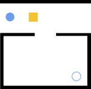

Creating an SVG Scenario
Each Namo scenario is fully contained in a single SVG file.
The Geometry File
Here are the contents of a minimal svg geometry file. All geometries in the world must be svg path elements and each must have an id attribute which is used by the <namo_config> to configure the geometry as an entity in the simulation.
<?xml version="1.0" encoding="UTF-8" standalone="no"?>
<svg:svg
version="1.1"
viewBox="0 0 151.86302 147.25102"
stroke-miterlimit="10"
id="svg2"
inkscape:version="1.1.2 (0a00cf5339, 2022-02-04)"
sodipodi:docname="minimal_stilman_2005.svg"
width="4.0180426cm"
height="3.8960166cm"
style="fill:none;stroke:none;stroke-linecap:square;stroke-miterlimit:10"
xmlns:inkscape="http://www.inkscape.org/namespaces/inkscape"
xmlns:sodipodi="http://sodipodi.sourceforge.net/DTD/sodipodi-0.dtd"
xmlns:svg="http://www.w3.org/2000/svg"
xmlns:rdf="http://www.w3.org/1999/02/22-rdf-syntax-ns#"
xmlns:cc="http://creativecommons.org/ns#"
xmlns:dc="http://purl.org/dc/elements/1.1/">
<svg:metadata
id="metadata41">
<rdf:RDF>
<cc:Work
rdf:about="">
<dc:format>image/svg+xml</dc:format>
<dc:type
rdf:resource="http://purl.org/dc/dcmitype/StillImage" />
</cc:Work>
</rdf:RDF>
</svg:metadata>
<svg:defs
id="defs39" />
<namo_config
cell_size_cm="3.0">
<agent
agent_id="robot_0">
<goal
goal_id="goal_0" />
<behavior
type="stilman_2005_behavior">
<parameters
use_social_cost="true" />
</behavior>
</agent>
</namo_config>
<sodipodi:namedview
pagecolor="#ffffff"
bordercolor="#666666"
borderopacity="1"
objecttolerance="10"
gridtolerance="10"
guidetolerance="10"
inkscape:pageopacity="0"
inkscape:pageshadow="2"
inkscape:window-width="2490"
inkscape:window-height="1376"
id="namedview37"
showgrid="false"
inkscape:zoom="4"
inkscape:cx="28.125"
inkscape:cy="29.125"
inkscape:current-layer="svg2"
fit-margin-top="0"
fit-margin-left="0"
fit-margin-right="0"
fit-margin-bottom="0"
inkscape:pagecheckerboard="0"
inkscape:window-x="70"
inkscape:window-y="27"
inkscape:window-maximized="1"
units="cm"
inkscape:document-units="cm" />
<svg:path
inkscape:label="#path3336-6-0"
style="fill:#f1c232;fill-opacity:1;stroke:none;stroke-width:0.806407px;stroke-linecap:butt;stroke-linejoin:miter;stroke-opacity:1"
d="m 63.027053,20.770784 h -15.11811 v 15.11811 h 15.11811 z"
id="movable_box"
inkscape:connector-curvature="0"
sodipodi:nodetypes="ccccc"
type="movable" />
<svg:path
style="fill:#000000;fill-opacity:1;stroke:none;stroke-width:1px;stroke-linecap:butt;stroke-linejoin:miter;stroke-opacity:1"
d="M 151.85619,0 H 0 v 5.5861 h 151.85619 z"
id="wall_top"
inkscape:connector-curvature="0"
sodipodi:nodetypes="ccccc"
inkscape:label="#path3336-6-3"
type="wall" />
<svg:path
style="fill:#000000;fill-opacity:1;stroke:none;stroke-width:0.913109px;stroke-linecap:butt;stroke-linejoin:miter;stroke-opacity:1"
d="M 57.980695,59.69316 H 5.8444541 v 82.14351 H 145.74027 V 59.383769 H 93.604034 V 54.742893 H 151.86303 V 147.25102 H 0.2783074 V 54.588197 H 57.96944 Z"
id="wall_bottom"
type="wall"
inkscape:connector-curvature="0"
sodipodi:nodetypes="ccccccccccccc"
inkscape:label="#path4149" />
<svg:path
sodipodi:type="star"
style="fill:#6d9eeb;fill-opacity:1;stroke:none;stroke-linecap:square;stroke-miterlimit:10;stroke-opacity:1"
id="robot_0"
type="shape"
sodipodi:sides="16"
sodipodi:cx="16.754114"
sodipodi:cy="28.062744"
sodipodi:r1="7.3751149"
sodipodi:r2="7.2334037"
sodipodi:arg1="-0.10272987"
sodipodi:arg2="0.093619673"
inkscape:flatsided="true"
inkscape:rounded="0"
inkscape:randomized="0"
inkscape:label="#path4172"
d="m 24.090347,27.306431 -0.269009,2.865026 -1.34493,2.543993 -2.216097,1.835661 -2.749884,0.847866 -2.865026,-0.269009 -2.543993,-1.34493 -1.835661,-2.216097 -0.8478656,-2.749884 0.2690091,-2.865026 1.3449295,-2.543993 2.216098,-1.835661 2.749883,-0.847866 2.865026,0.26901 2.543993,1.344929 1.835661,2.216098 z" />
<svg:path
id="goal_0"
style="stroke:#6d9eeb;stroke-width:0.982677;stroke-miterlimit:4"
inkscape:label="#path4172"
d="m 134.92116,125.58704 c -0.1021,0.96642 -0.16001,1.94602 -0.28973,2.9042 -0.45725,0.84073 -0.87873,1.71054 -1.35834,2.53309 -0.74418,0.60174 -1.46644,1.24406 -2.22432,1.82045 -0.91781,0.27115 -1.83089,0.58817 -2.75166,0.83066 -0.95171,-0.10072 -1.91661,-0.15725 -2.86008,-0.28558 -0.84072,-0.45725 -1.71054,-0.87873 -2.53308,-1.35835 -0.60175,-0.74417 -1.24406,-1.46643 -1.82045,-2.22431 -0.27116,-0.91781 -0.58818,-1.8309 -0.83067,-2.75166 0.10072,-0.95171 0.15725,-1.91661 0.28558,-2.86008 0.45726,-0.84073 0.87874,-1.71054 1.35835,-2.53309 0.74418,-0.60174 1.46644,-1.24405 2.22432,-1.82044 0.91781,-0.27116 1.83089,-0.58818 2.75166,-0.83067 0.95171,0.10072 1.9166,0.15725 2.86008,0.28558 0.84072,0.45726 1.71054,0.87873 2.53308,1.35835 0.60175,0.74418 1.24406,1.46643 1.82045,2.22432 0.27827,0.90251 0.55654,1.80502 0.83481,2.70753 z" />
</svg:svg>
Here is the same file rendered as an image:
{kind=link}

You can see the robot starting position in the top left. To the right of the robot is a movable box. The walls are in black. The robot goal pose is visible in the bottom right.
We recommend using Inkscape to edit your svg geometry file.
Units
It is essential that all units in your SVG geometry file be in CENTIMETERs. The reasons for this is because, Inkscape only supports centimeters and not meters. The NAMO planner will convert the units to meters during execution.
The Namo Config
The scenario file must contain a <namo_config> element that is a direct child of the root <svg> element. This object configures the simulator and agents and it the place where all agent behavioral parameters are set.
The full specification for the <namo_config> is defined by the NamoConfigModel class which can be found in namosim/data_models.py.